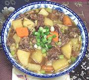

|
Oxtail StewChina, Szechuan / Hunan | ||||
| Serves: Effort: Sched: DoAhead: |
4 w/rice ** 3-3/4 hrs Yes |
A hearty, easy to make stew suitable as a main dish with rice, side dish or soup course (just adjust liquid). Vegetables can be varied in quantity and selection. | |||
|
3 ----- 4 1/2 1/4 1/2 ----- 2 8 1 6 |
# --- c c c in --- # oz oz |
Ox Tails (1) -- Broth Water Soy Sauce Rice Wine (2) Ginger root ----------- Potatoes (3) Carrots Chili (4) Celery |
Make: - (3-3/4 hrs - 35 min work)
|